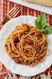

Spaghetti Recipe

Why Spaghetti?
Spaghetti is probably the most kid-friendly pasta recipe to ever exist! Serve this Easy Spaghetti Recipe with a side of Breadsticks and a fresh Salad - your whole family will be thanking.
you!
Ingredients
- tomato sauce
- tomato paste
- spaghetti noodles
Steps
- Fill a large Dutch oven or pot with cold water 3/4 full and bring to a boil. Add 2 tsp salt and spaghetti.
- Drain Pasta
- Add remaining ingredients: Drained pasta, tomato sauce, remaining 1/2 tsp salt, ground black pepper, and 1 more fresh garlic clove. Stir gently until warmed through.